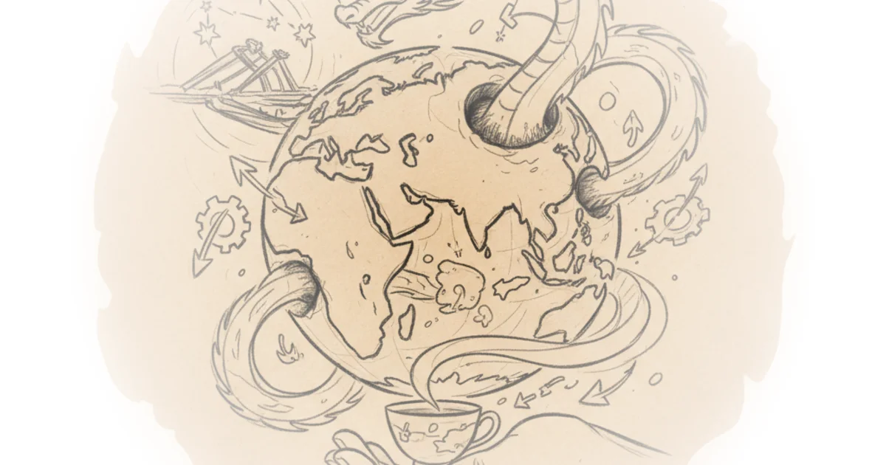

A Fractured Order, Through Chinese Eyes
Sinification's February 2026 digest, compiled by Jacob Mardell and the Sinification team in collaboration with Bill Bishop's Sinocism, lands at a moment of genuine geopolitical rupture. The United States and Israel killed Iran's Supreme Leader on 28 February. The digest was largely assembled before that event, yet its themes -- the decay of American-led order, China's uncertain posture in a fragmenting world, and the question of what comes next -- read as almost eerily prescient.
The digest collects summaries of Chinese-language commentary from over two dozen scholars, think-tank analysts, and former officials. It spans eight thematic areas: global order and United States-China relations, Japan, Taiwan, the Middle East, Europe, Latin America, the Chinese economy, and technology and society. The sheer breadth is the point. This is not a single argument but a curated cross-section of how China's policy-adjacent intellectual class is processing a world in flux.

The Post-American Order: Managed Trade and Feudalisation
The digest opens with a cluster of voices describing the collapse of the post-war economic architecture. Ma Xiaoye, a former director of United States affairs at the Ministry of Foreign Trade and Economic Cooperation (MOFTEC), argues that free trade is over and that the future belongs to framework agreements setting volumes and values by product category -- what he calls "managed trade." Middle powers, Ma contends, are racing to cut deals with Beijing before Washington and Beijing set the rules without them.
The post-war economic order was built on US debt claims and designed to absorb American overcapacity -- now that the US is a thirty-nine-trillion-dollar debtor nation pursuing reindustrialisation, the economic logic underpinning that order has reversed.
Zheng Yongnian, who appears throughout the digest as a kind of omnipresent commentator, goes further. He declares that the Davos Forum marked the death of the "Global North" as a concept, describing Western allies as having been "beaten awake" by Trump's coercion. The international system, Zheng argues, is undergoing "feudalisation" as each great power builds a regional order centred on itself.
The most striking formulation comes from Ding Yifan, Jin Canrong, and Di Dongsheng, who reframe the standard "China plus one" narrative as a "World minus one" -- with the United States as the subtracted party. They describe China as having been tempered into an "indestructible body" by years of pressure, yet acknowledge a tension worth noting:
China cannot simply take the baton from America or it will repeat the same structural mistakes; it must build a fairer system of "common finance" in which both surplus and deficit countries bear adjustment responsibility.
That concession -- that China's trade surpluses generate legitimate international concern -- is rare in this corpus. It sits uneasily alongside the more triumphalist tone elsewhere.
Red Lines and Escalation
Chen Wenling, chief economist at the China Center for International Economic Exchanges, calls for Beijing to articulate economic "bottom lines" with the same clarity it reserves for Taiwan. She identifies four untouchable red lines: the inviolability of overseas investment rights, the preservation of trade with sanctioned partners like Venezuela, Iran, and Russia, protection of Chinese supply chains abroad, and equal access to international sea lanes.
The US-Western bloc is undergoing a "landmark fracturing", and China should seize this moment to use its comprehensive national strength to "form necessary pressure" on those who harm its interests.
Chen's framing is notable for its directness. But there is a tension the digest does not fully resolve: if the American-led order is collapsing under its own weight, as several contributors argue, why does China simultaneously need to escalate? The logic toggles between triumphalism -- the West is fracturing, China is ascendant -- and alarm that Beijing must act urgently before windows close.
Tian Feilong pushes this hawkish line even further on the Panama Canal dispute, insisting that China maintain an "escalatory" posture over Panama's voiding of CK Hutchison's port contract, including secondary sanctions on American overseas interests and potentially postponing Trump's planned visit to China. A defeat, Tian argues, would devastate the Belt and Road Initiative's global credibility.
Japan: The Ticking Clock
Several contributors treat Japan's rightward shift under Prime Minister Sanae Takaichi as an accelerating threat. Li Yongjing of East China Normal University offers a provocative reframing:
Japan is not a country with a right wing -- it is a right-wing nation-state.
Li argues that right-wing thought, anchored in Emperor-system nationalism, has constituted the defining character of Japanese political life since the Meiji era. Today's right wing, he adds, suffers from "intellectual hollowing-out" but retains its proven capacity for action.
Zheng Yongnian claims the three constraints that once held back Japan's militarisation -- constitutional limits, American restraint, and domestic pacifist sentiment -- have all collapsed simultaneously. He suggests that if Japan continues to provoke, China should consider reopening the question of Ryukyu's sovereignty. Jin Canrong explicitly links Japan to the Taiwan timeline, arguing that China should resolve the Taiwan issue before Japan completes its military modernisation.
The urgency is palpable, but the analysis would benefit from more consideration of Japan's domestic constraints. Takaichi's election victory does not erase the structural headwinds -- demographic decline, fiscal limits, supply chain dependencies on China -- that constrain Japanese military ambitions regardless of political will.
Taiwan: Confidence and Anxiety in Equal Measure
The Taiwan section reveals an interesting split. Zhang Wenmu of Beihang University captures the hawk position with dialectical flair:
The conditions for reunification with Taiwan are at their most favourable and most mature -- but by dialectical logic, peak maturity also means peak fragility, and the window is fleeting.
Liu Guoshen of Xiamen University offers a strikingly different approach. Rather than scrambling anxiously over every provocation, Liu argues, Beijing should manage Taiwan from a position of calm, confident superiority, letting structural gravity do its work. The sovereignty debate, he says, is already in "garbage time."
Wang Jisi and David Lampton, writing in Foreign Affairs, identify a rare window for a "new normalisation" of United States-China relations, beginning with Taiwan. They note that Beijing's own Anti-Secession Law criteria for military action are not currently met -- a significant admission that sits awkwardly beside the hawks' demands for imminent resolution.
The Middle East: Religious War 2.0
The Iran coverage is the most time-sensitive section, straddling the days before and after the killing of Khamenei. Jin Liangxiang frames the nuclear negotiations as a calculated "trap" by the United States and Israel to provide pretext for military action. Niu Xinchun describes the conflict as a structural "mini-Cold War" fusing great power competition with irreconcilable ideological opposition between secular capitalism and political Islam.
Zheng Yongnian's post-strike analysis is the most dramatic:
The killing of Khamenei is not merely a geopolitical event but a "Religious War 2.0" between irreconcilable absolutes, driven by Trump's deep religious values -- a dimension Chinese analysts, as products of a secular civilisation, have widely underestimated.
Zheng warns that Trump's "hit-and-run" strategy avoids the occupation trap of the Bush era but accelerates the erosion of rules-based order, replacing it with a "fear-based jungle world" governed by raw power. He draws a direct line to East Asia: if Israel serves as America's Middle Eastern strategic pivot, Japan could play the same role in the Pacific. That parallel deserves more scrutiny than the digest gives it.
The Economy: Capital Account Wars and Property Heresies
The economic section features a genuinely fascinating debate over capital account liberalisation. Li Xunlei, chief economist at Zhongtai Securities, argues that the prevailing consensus -- that free convertibility would crash the renminbi (RMB) -- is wrong. The currency, he contends, is undervalued by roughly half:
China's vast money supply is not a flood waiting to escape -- it is bloated precisely because the closed capital account forces the central bank to create base money passively from reserve accumulation; opening would shrink it while attracting foreign capital into an undervalued currency.
Miao Yanliang of China International Capital Corporation (CICC) dismantles what he calls seven "outdated assumptions" underpinning resistance to opening. Zhang Chun of Shanghai Advanced Institute of Finance pushes back hard, insisting full onshore opening will not occur for at least twenty years, and that the goal should not be to replace the dollar but to become the leading second-tier currency at roughly twenty percent global share.
On the property front, Zhao Yanjing offers a sharp heterodox defence of land revenue as equivalent to municipal equity. The government's property crackdown, Zhao argues, rested on a category error:
Without these bubbles there would have been no success of reform and opening up, still less any so-called China miracle.
Sheng Songcheng outlines a more orthodox path, arguing that China must stabilise real estate within one to two years, noting that with over ninety percent of residents owning property, falling prices erode household wealth on a vast scale.
Artificial Intelligence and the Education Pressure Cooker
Cai Fang of the Chinese Academy of Social Sciences warns that artificial intelligence (AI) will deepen China's unemployment challenge by accelerating a "reverse-Kuznets process" in which labour shifts from high-productivity to lower-productivity sectors. Zhang Dandan of Peking University calls for a data-driven early-warning system to track granular shifts in tasks and skills before structural unemployment takes hold.
The most pointed commentary comes from Yao Yang, who frames the problem as cultural rather than technological. China's social model, he argues, still reflects a utilitarian development pathway in which individuals are viewed as mere tools for boosting gross domestic product (GDP). The current education system, Yao says, "ruins" rather than "cultivates" students. He calls for abolishing the High School Entrance Exam. Chen Zhiwen pushes back, arguing that these exams function as instruments of social governance and that more subjective assessment methods would be more susceptible to elite manipulation.
Bottom Line
Sinification's February digest reveals a Chinese strategic class that is simultaneously confident and anxious, triumphalist about American decline and nervous about closing windows of opportunity. The intellectual quality is high, particularly the capital account debate and the split between hawks and gradualists on Taiwan. What the digest captures better than any single-author analysis could is the genuine cacophony inside China's policy-adjacent discourse -- this is not a monolith issuing instructions but a fractious, competitive marketplace of ideas, running from Zhao Yanjing's property heresies to Wang Jisi's careful diplomacy. The recurring weakness is a tendency to describe American power as simultaneously collapsing and requiring urgent Chinese countermeasures, a tension that most contributors leave unresolved. For anyone trying to understand how Beijing's intellectual infrastructure is processing this chaotic moment, the digest is indispensable.